Voyons maintenant comment donner une forme arrondie à un segment de ballon.
C'est une technique importante car elle permet d'affiner les petits détails des sculptures qui gagnent ainsi en réalisme et en naturel.
Elle vous permettra par exemple de reproduire la forme arrondie du petit ventre d'un toutou, d'un nounours ou d'un pingouin, ou encore la courbure d'une tige de fleur, ou d'une lame d'épée, etc...
Pour aller plus loin, nous verrons également comment confectionner une spirale très simplement (d'autres techniques existent mais nous les aborderons plus tard car elles sont un peu plus complexes).
Les ballons en forme de spirale peuvent être utilisés pour former le corps d'un serpent, ou même le ressort de suspension d'un engin motorisé !
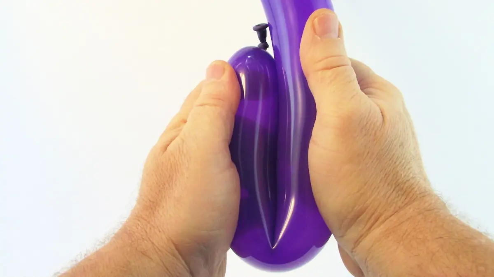1- Prendre un ballon à pleines mains et le plier, à proximité du nœud.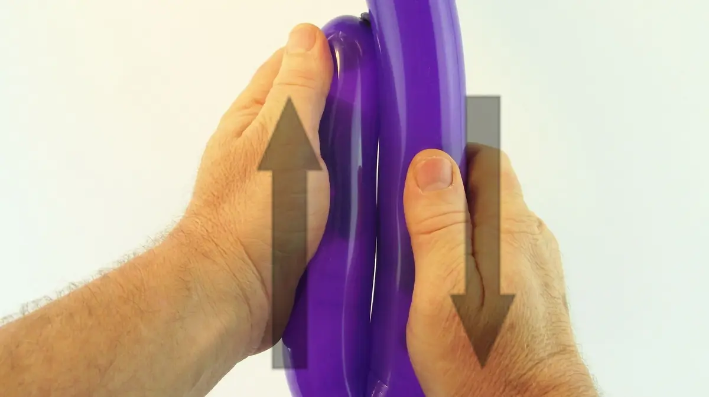2- Frotter les deux segments l'un contre l'autre de façon à déplacer le pli du ballon, de haut en bas,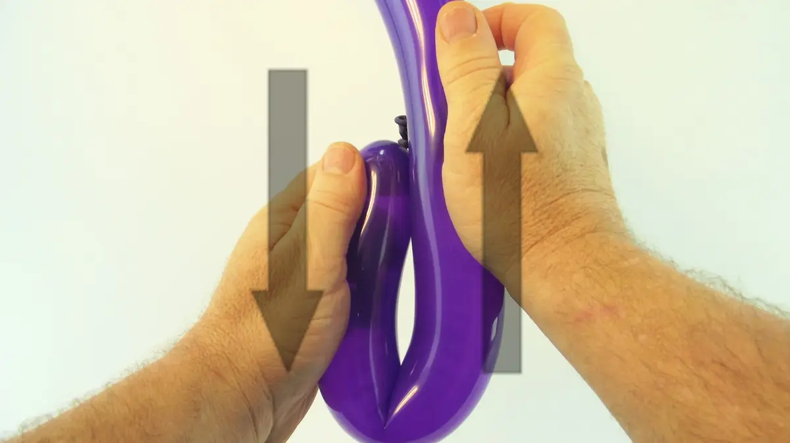3- puis de bas en haut, plusieurs fois.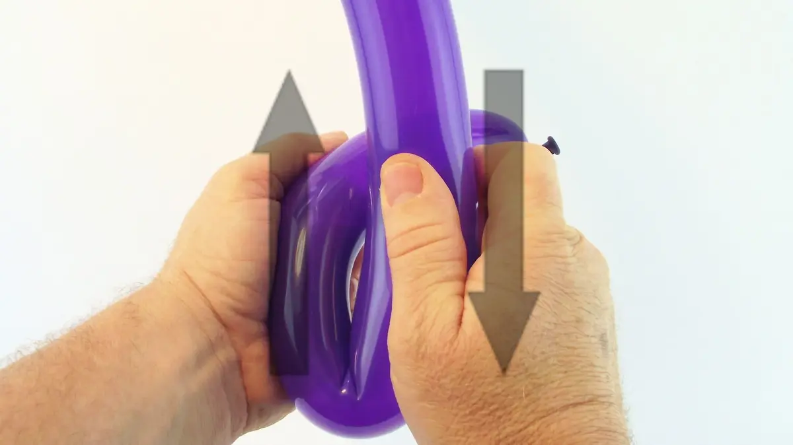4- Continuer ce mouvement de va-et-vient tout en faisant avancer le ballon, et donc le pli ou s'exerce le frottement, entre les deux mains.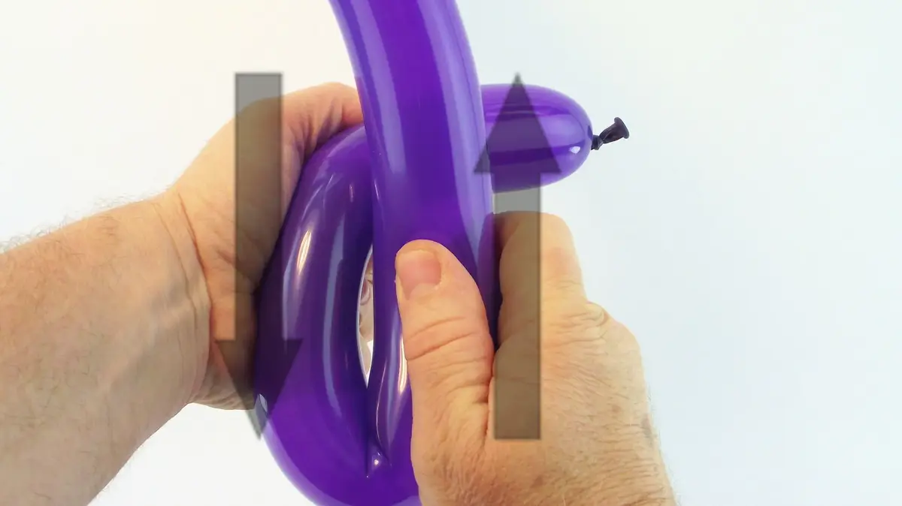5- Petit à petit le nœud du ballon s'éloignera de la main de maintien.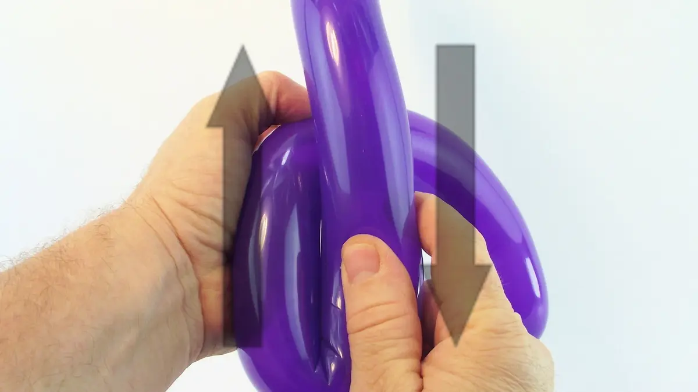6- L'idée c'est de faire passer l'intégralité de la partie gonflée du ballon par ce mouvement de friction entre vos mains,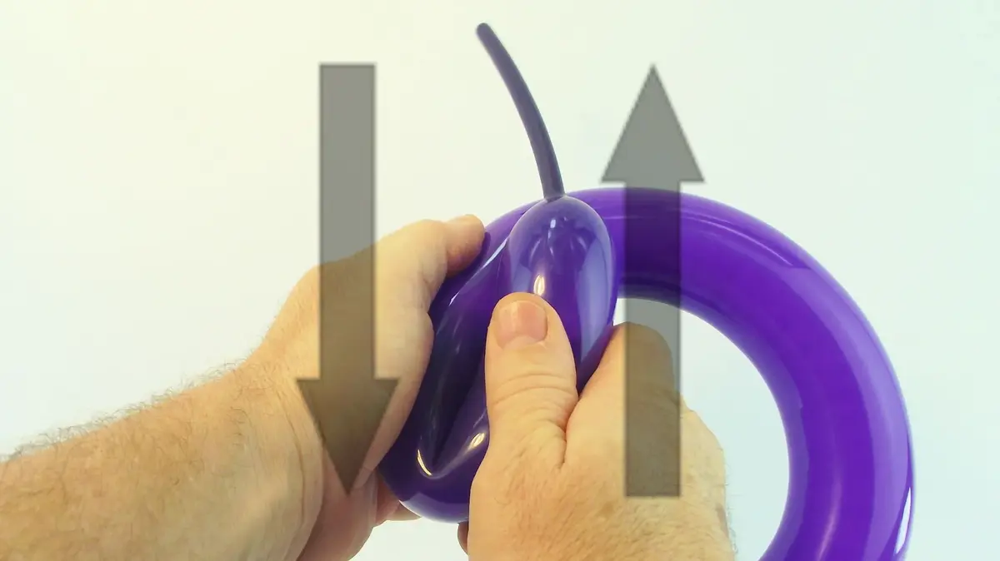7- jusqu'à ce que le bout de queue non gonflée du ballon arrive à la main de manipulation.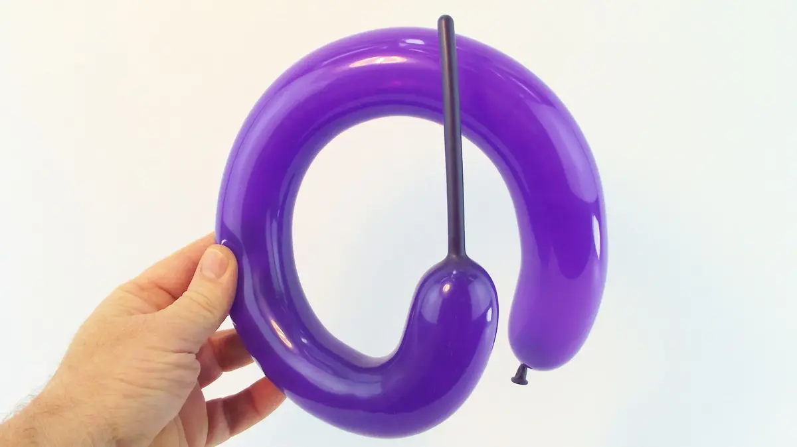8- On peut obtenir ainsi un cercle presque parfait.9- Pour obtenir une spirale, la manœuvre est presque identique, sauf que l'on ne doit pas relâcher la partie du ballon qui passe entre ce mouvement de mains.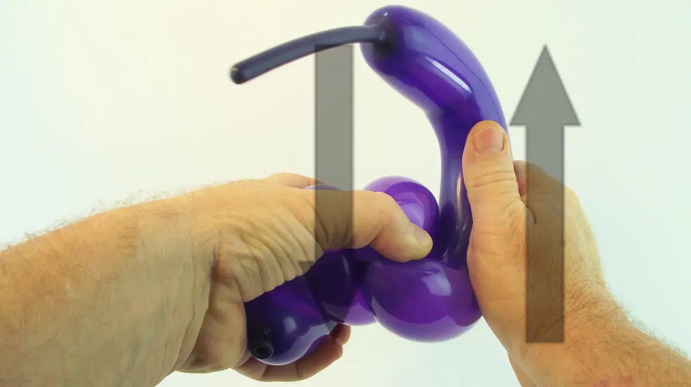10- On doit la garder comprimée en forme de spirale au fur et à mesure que l'on travaille sur toute la longueur de ballon .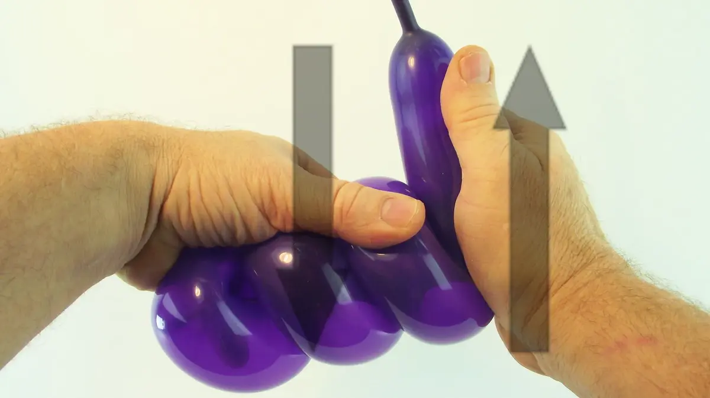11- S'il est trop difficile de garder la spirale comprimée avec sa seule main de maintien, on peut s'aider d'une autre partie de son corps (comme dans la vidéo) .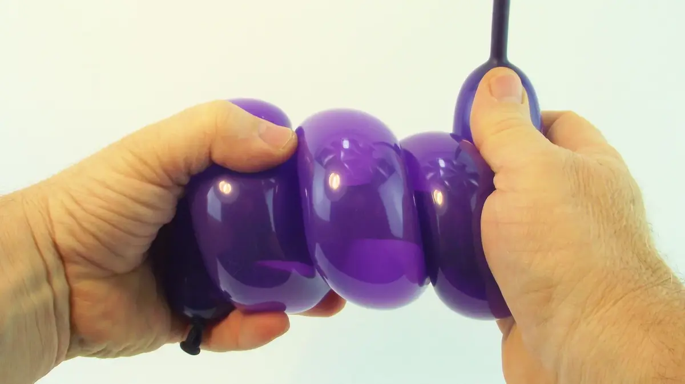12- Une fois que toute la longueur du ballon est comprimée en forme de spirale, bien tenir chaque extrémité de la spirale dans chacune des deux mains,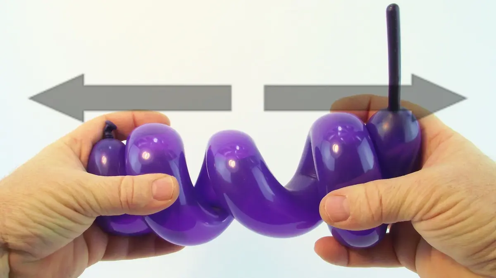13- et écarter doucement les deux extrémités le plus loin possible l'une de l'autre, puis relâcher prise tout aussi doucement.Une fois relâché, le ballon conservera sa forme en spirale. Et à bientôt, pour une autre leçon... avec Môssieur Ballon !